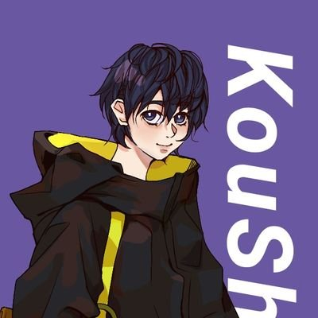

"I fly towards the skies and angels." - Akari Kou "I am writing who those are sinned." -Kaneko Kuro "I am who foresee through the lands." - Kaguimi Atarie

About Akari Kou
He is a innocent bird from the lands of nestopia, He sees vtubers and interest about it. Now, he sharing his fellow birds to join him to his journey.